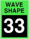

WAVESHAPER shape
These select one of 17 shapes for each waveshaper. Two are based on sawtooth waves, where the “saws” shape is the sum of two sawtooth waves with a phase difference between them, and “pulse” is the difference between two sawtooth waves, thus having the opposite harmonic spectrum. That is, where the saws wave has peaks the pulse has notches, and vice versa.
The FM shapes are new to the Digital Chroma. They are single operator phase modulation sounds, where a sine wave of one multiple of the oscillator frequency modulates a sine wave carrier of another multiple, with a number of different ratios. For instance, the “FM 3:2” setting uses a carrier at three times the oscillator frequency, and a modulator at twice the oscillator frequency. They are best understood, however, by listening to them first with the width parameter set to zero, then by slowly raising the width to increase the FM amount, to hear how the harmonic content evolves.
There are also two FM shapes where the sine wave carrier is modulated by the opposite channel's oscillator output or its filter's low-pass output.
Finally, there are two noise types, present in the original Chroma, plus a new “impulse” shape that generates a click at the start of the note. It is useful for pinging a highly resonant filter; it’s duration is inversely proportional to the oscillator frequency, but it is otherwise unpitched. With these three shapes, the width parameters do nothing.
Toolkit
These are contained in the Waveshaper shape cluster within the Waveshaper section.
Chroma panel
These are contained in the WIDTH section of the right panel, under the following parameter number:
|  |
These appear in the display as Wave Shape.
MIDI
These are accessed via the following NRPNs:
| A | 1,48 | |
| B | 2,48 |
Values
| MIDI | display | ||
| 0 | saws | (default) | |
| 1 | pulse | ||
| 2 | FM 1:1 | ||
| 3 | FM 1:2 | ||
| 4 | FM 1:3 | ||
| 5 | FM 1:4 | ||
| 6 | FM 2:1 | ||
| 7 | FM 2:3 | ||
| 8 | FM 3:1 | ||
| 9 | FM 3:2 | ||
| 10 | FM 3:4 | ||
| 11 | FM 4:1 | ||
| 12 | FM 4:3 | ||
| 13 | oscillator FM | ||
| 14 | filter FM | ||
| 15 | pink noise | ||
| 16 | white noise | ||
| 17 | impulse |